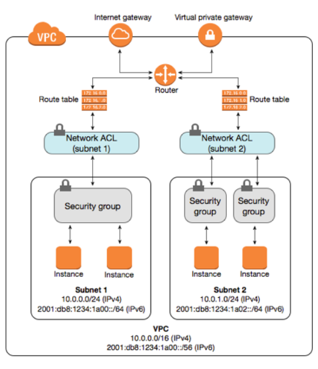

Firewalls
A firewall is something that has a set of rules to allow/block inbound/outbound traffic to/from your network. You can have two types of firewall in AWS
- At the network layer- Network Access Control Lists(NACL)
- At the Instance level- Security Group(SG)

The diagram above explains where NACL sits(Firewall for the entire subnet/network), and your SG acts as a firewall at the instance/resource level. Let us talk about the differences between the two
Stateful vs Stateless:
Network ACLs are stateless: This means any changes applied to an incoming rule will not be applied to the outgoing rule. e.g. If you allow an incoming port 80, you would also need to apply the rule for outgoing traffic. Whereas your SG rules are stateful, i.e, if you allow port 80 for inbound traffic, the outbound traffic for port 80 is automatically allowed.Allow or Deny rules:
Security group supports allow rules only (by default all rules are denied). e.g. You cannot deny a certain IP address from establishing a connection. Network ACL supports allow and deny rules. By deny rules, you could explicitly deny a certain IP address to establish a connection example: Block IP address 123.201.57.39 from establishing a connection to an EC2 Instance.Evaluation of Firewall rules:
All rules in a security group are applied whereas rules are applied in their order (the rule with the lower number gets processed first) in Network ACL. Security groups evaluate all the rules in them before allowing traffic whereas NACLs do it in the number order, from top to bottom.- Defense order:
Security group first layer of defense for a resource since it sits right next to it, whereas Network ACL is the second layer of the defense- sitting at the network level.
Below are the few screenshots that you can refer for Secutiry groups and NACL: